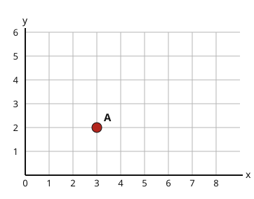
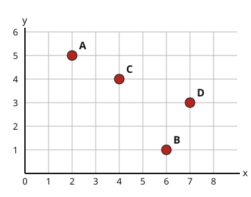

Koordinatensystem
Mit einem KI-Tutor lernen
Ein KI-Tutor erklärt dir diese Seite und hilft dir bei den Aufgaben. Wähl deinen Assistenten:
Mit Claude öffnen Mit ChatGPT öffnen Mit Mistral Vibe öffnen
Du nutzt dein eigenes Konto beim Anbieter. Der Assistent ist kein Angebot von lernapps.net: lernapps liefert nur Inhalte und Aufgaben. Die Wahl gilt für alle Seiten, nur auf diesem Gerät.
Wo liegt das Schiff?
Nika und Jonas lesen den dritten Hinweis ihrer Schatzkarte: Er nennt zwei Zahlen. Die Karte hat ein Gitter, wie das Spielbrett bei Schiffe versenken. Du setzt dort ein Schiff auf einen Punkt. Nach dieser Seite kannst du jeden Punkt des Gitters mit zwei Zahlen angeben, damit Nika und Jonas den Schatz wiederfinden.

© CC-BY-4.0Das Schiff A auf dem Spielbrett. Die Zahlen am Rand zählen die Schritte ab der 0.
Aufgabe
Lösung
3 Schritte richtige Antwort
Richtig. Die Zahl am unteren Rand unter A ist die 3.
2 Schritte
2 ist die Zahl am linken Rand. Sie sagt, wie weit A über dem unteren Rand steht.
5 Schritte
5 ist 3 und 2 zusammen. Gezählt wird nach rechts nur bis unter A.
Nach rechts zählst du am unteren Rand. Wie weit A über dem unteren Rand steht, kommt gleich dazu.
So gibst du einen Punkt an
Wenn du jemandem sagen willst, wo ein Punkt auf dem Gitter liegt, ohne ihn zu zeigen, brauchst du ein festes System aus zwei Zahlen. Das Gitter heißt Koordinatensystem. Es hat zwei Achsen: Die x-Achse geht nach rechts, die y-Achse geht nach oben. Dort, wo beide bei 0 beginnen, liegt der Ursprung.
Ein Punkt liegt dort, wo sich zwei Gitterlinien kreuzen. Er hat zwei Koordinaten: Du gehst zuerst die x-Zahl nach rechts und dann die y-Zahl nach oben. Du schreibst sie so auf: P(3 | 2). P steht für Punkt, ein anderer Buchstabe geht auch, zum Beispiel A(3 | 2). Der senkrechte Strich trennt die beiden Zahlen. Die erste ist x, die zweite ist y. Der Ursprung ist P(0 | 0).
- Koordinatensystem
Ein Gitter mit einer x-Achse nach rechts und einer y-Achse nach oben. Jeder Punkt hat zwei Koordinaten.
Merke
Wer P(2 | 3) und P(3 | 2) verwechselt, landet an zwei verschiedenen Stellen. Die Reihenfolge entscheidet.
Ein Beispiel
Der Punkt P(4 | 1)
 © CC-BY-4.0
© CC-BY-4.0Der Weg zu P(4 | 1) vom Ursprung aus.
Erst 4 Schritte nach rechts, dann 1 Schritt nach oben. Du schreibst P(4 | 1).
Übung
Mit diesen Aufgaben prüfst du, ob du Punkte im Gitter nennen und setzen kannst.

© CC-BY-4.0Vier Punkte A bis D auf dem Spielbrett.
Aufgabe
Lösung
Richtige Antwort: Punkt A – (2 | 5); Punkt B – (6 | 1); Punkt C – (4 | 4); Punkt D – (7 | 3)
Lies zuerst den Wert auf der x-Achse ab, dann den auf der y-Achse.
Aufgabe
Drei Beispielaufgaben, jede mit ihrer Lösung:
Aufgabe Nr. 1
Ein Schiff liegt auf P(4 | 3). Es fährt 4 Schritte nach rechts und 2 Schritte nach oben. Wie groß ist danach seine x-Koordinate?
Tipp
Nach rechts ändert sich die x-Koordinate, nach oben die y-Koordinate.
Lösung
- Die x-Koordinate ändert sich beim Fahren nach rechts: 4 + 4 = 8.
Richtige Antwort: 8
Aufgabe Nr. 2
Ein Schiff liegt auf P(1 | 3). Es fährt 3 Schritte nach rechts und 2 Schritte nach oben. Wie groß ist danach seine x-Koordinate?
Tipp
Nach rechts ändert sich die x-Koordinate, nach oben die y-Koordinate.
Lösung
- Die x-Koordinate ändert sich beim Fahren nach rechts: 1 + 3 = 4.
Richtige Antwort: 4
Aufgabe Nr. 3
Ein Schiff liegt auf P(1 | 3). Es fährt 4 Schritte nach rechts und 3 Schritte nach oben. Wie groß ist danach seine x-Koordinate?
Tipp
Nach rechts ändert sich die x-Koordinate, nach oben die y-Koordinate.
Lösung
- Die x-Koordinate ändert sich beim Fahren nach rechts: 1 + 4 = 5.
Richtige Antwort: 5
Aufgabe Nr. 1
Aufgabe Nr. 1
Setze dein Schiff auf den Punkt P(5 | 1).
Lösung
P(5 | 1): 5 Schritte nach rechts, 1 Schritte nach oben.
Fehler gefunden oder eine Idee für diese App?